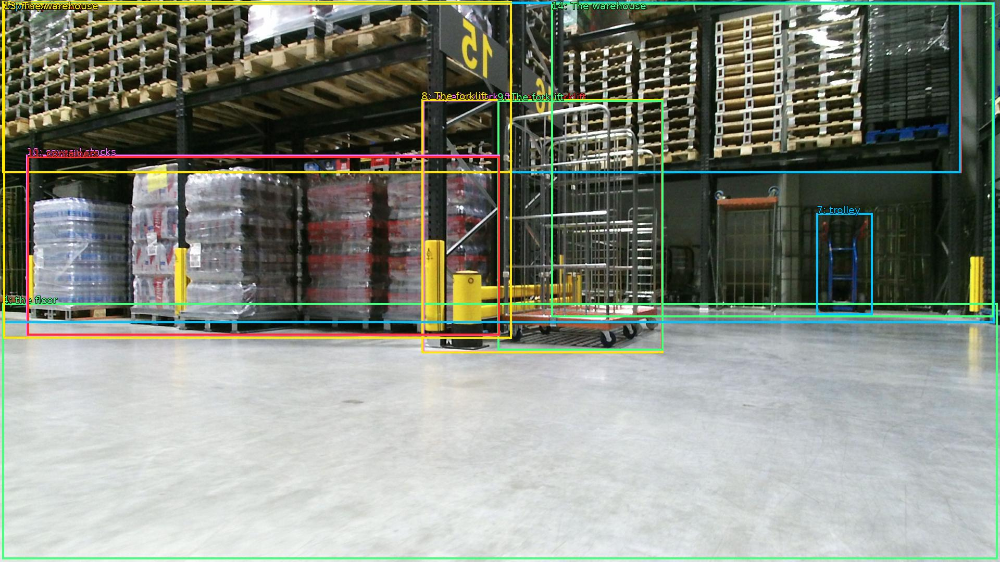

The image shows a large warehouse with multiple rows of pallets stacked on top of each other. The pallets are arranged in a neat and orderly manner, and the floor is made of concrete. In the center of the image, there is a yellow forklift with a red trolley attached to it. The forklift is moving through the warehouse, and there are several stacks of plastic containers on the pallets. The warehouse appears to be well-maintained and well-organized, with a high ceiling and large windows on the right side.

Original · Caption raw · Grounding raw · Koordinate
Številke so lokalni ID regije. Dolge slikovne oznake so skrajšane; spodaj so celotne fraze. Napovedane regije se lahko prekrivajo ali opisujejo skupine.
| ID | Celotna fraza | bbox xyxy |
|---|---|---|
| 1 | multiple rows | [4.799999713897705, 3.7800002098083496, 1846.0799560546875, 332.1000061035156] |
| 2 | pallets | [4.799999713897705, 3.7800002098083496, 1844.159912109375, 332.1000061035156] |
| 3 | The pallets | [4.799999713897705, 2.700000047683716, 982.0799560546875, 332.1000061035156] |
| 4 | the floor | [4.799999713897705, 582.6600341796875, 1915.199951171875, 1074.06005859375] |
| 5 | a yellow forklift | [811.2000122070312, 191.70001220703125, 1273.919921875, 677.7000122070312] |
| 6 | a yellow forklift | [955.199951171875, 192.78001403808594, 1272.0, 673.3800048828125] |
| 7 | trolley | [1567.679931640625, 409.8600158691406, 1675.199951171875, 605.3400268554688] |
| 8 | The forklift | [809.2799682617188, 190.62001037597656, 1273.919921875, 678.780029296875] |
| 9 | The forklift | [955.199951171875, 192.78001403808594, 1273.919921875, 673.3800048828125] |
| 10 | several stacks | [50.87999725341797, 297.5400085449219, 959.0399780273438, 645.300048828125] |
| 11 | containers | [52.79999923706055, 300.7799987792969, 959.0399780273438, 644.2200317382812] |
| 12 | The warehouse | [6.71999979019165, 4.860000133514404, 1909.43994140625, 620.4600219726562] |
| 13 | The warehouse | [6.71999979019165, 5.940000057220459, 982.0799560546875, 650.7000122070312] |
| 14 | The warehouse | [1058.8800048828125, 5.940000057220459, 1907.5198974609375, 609.6600341796875] |